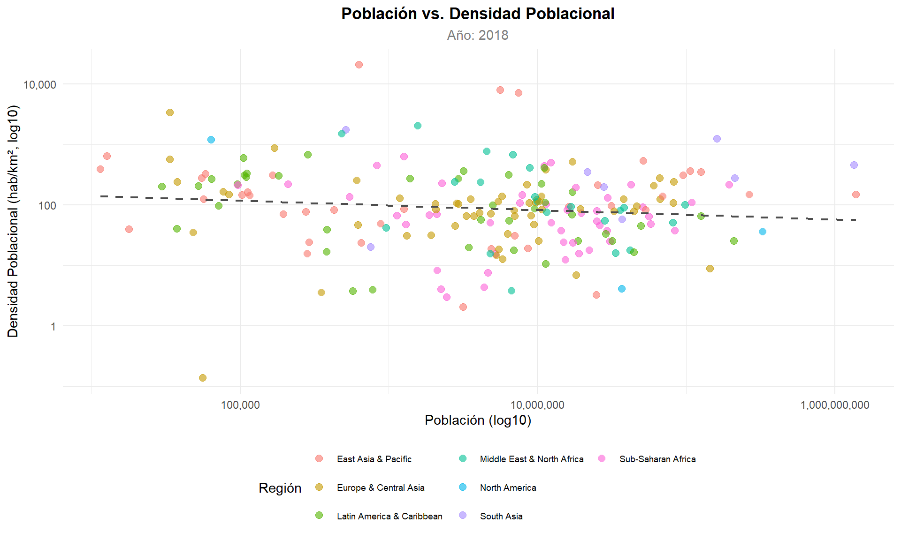
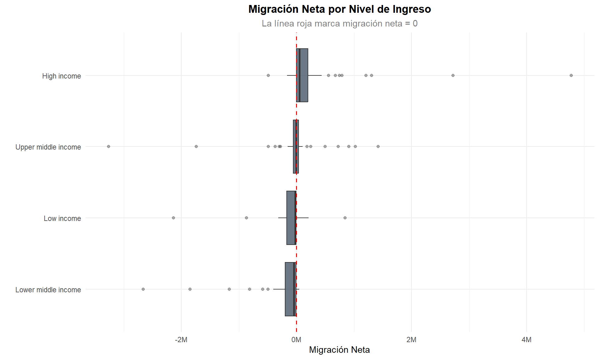
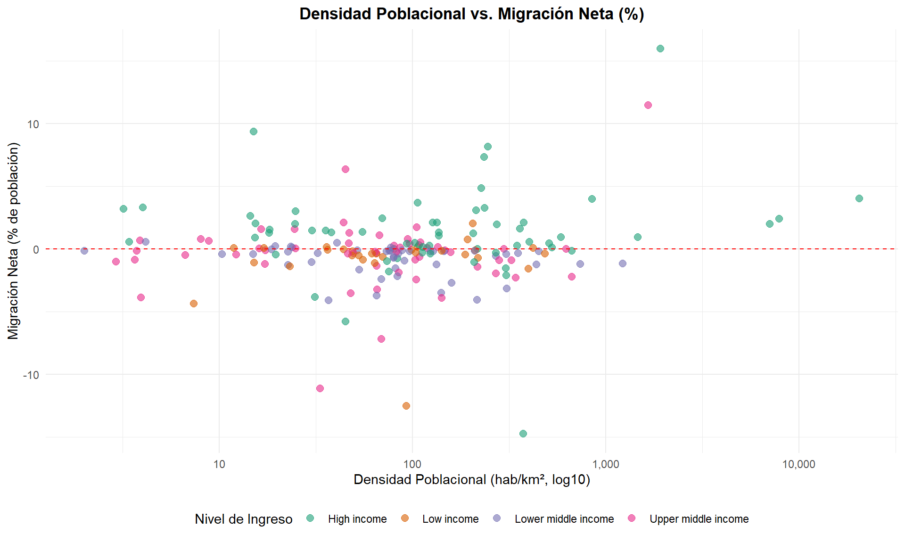
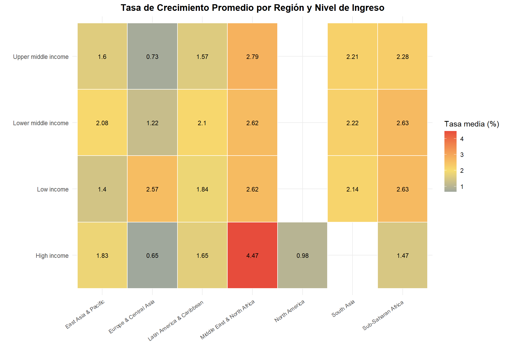
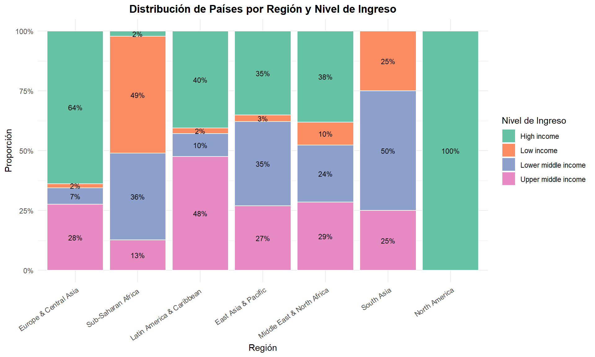
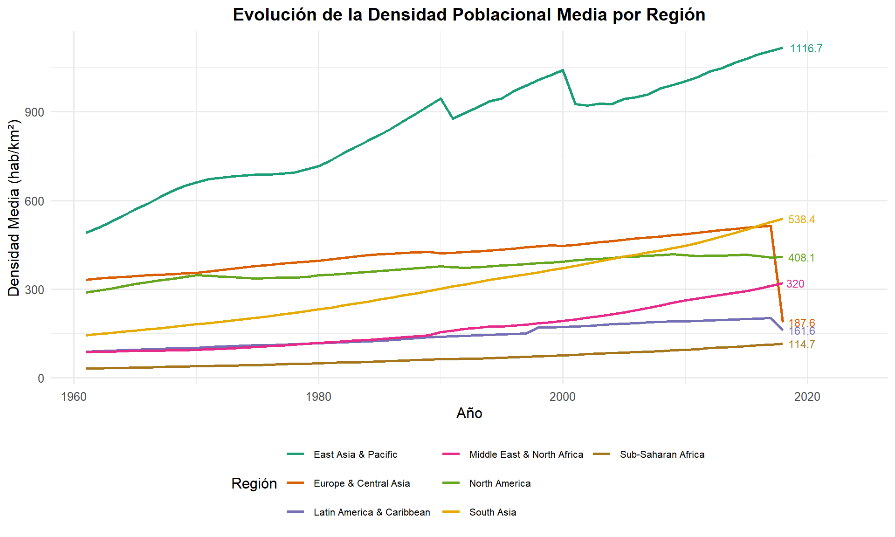

Capítulo 9 Análisis bivariado
En este capítulo se exploran las relaciones entre pares de variables del dataset, complementando el análisis univariado y de correlación previos. El objetivo es identificar asociaciones, tendencias y patrones conjuntos entre las dimensiones demográficas, geográficas y económicas.
9.1 Población vs. densidad poblacional
df_biv <- df_paises %>%
filter(year == max(year, na.rm = TRUE) &
!is.na(population) & !is.na(pop_density))
ggplot(df_biv, aes(x = population, y = pop_density, color = region)) +
geom_point(alpha = 0.6, size = 2.5) +
scale_x_log10(labels = comma) +
scale_y_log10(labels = comma) +
geom_smooth(method = "lm", se = FALSE, color = "grey30",
linetype = "dashed", linewidth = 0.8) +
labs(title = "Población vs. Densidad Poblacional",
subtitle = paste("Año:", max(df_biv$year)),
x = "Población (log10)",
y = "Densidad Poblacional (hab/km², log10)",
color = "Región") +
theme_minimal(base_size = 11) +
theme(plot.title = element_text(face = "bold", hjust = 0.5),
plot.subtitle = element_text(hjust = 0.5, color = "grey50"),
legend.position = "bottom",
legend.text = element_text(size = 7)) +
guides(color = guide_legend(nrow = 3))
Figure 9.1: Relación entre población y densidad poblacional (escala log-log)
El coeficiente de correlación en escala logarítmica es \(r =\) -0.121. La relación entre población y densidad se clasifica como débil bajo esta escala, lo que permite inferir que la densidad poblacional está sujeta en mayor medida a la extensión territorial que a la magnitud absoluta de habitantes. A modo de ilustración, naciones como India exhiben una elevada concentración demográfica acompañada de una cuantiosa población, mientras que territorios como Australia o Canadá, a pesar de contar con contingentes poblacionales sustanciales, presentan densidades exiguas dada la vasta extensión de sus superficies.
9.2 Migración neta vs. nivel de ingreso
df_mig_income <- df_paises %>%
filter(!is.na(net_migration) & !is.na(incomeLevel) & incomeLevel != "") %>%
filter(year == max(year, na.rm = TRUE))
ggplot(df_mig_income,
aes(x = reorder(incomeLevel, net_migration, FUN = median),
y = net_migration, fill = incomeLevel)) +
geom_boxplot(alpha = 0.7, outlier.alpha = 0.4) +
geom_hline(yintercept = 0, linetype = "dashed", color = "red", linewidth = 0.6) +
coord_flip() +
scale_y_continuous(labels = function(x) paste0(round(x / 1e6, 1), "M")) +
labs(title = "Migración Neta por Nivel de Ingreso",
subtitle = "La línea roja marca migración neta = 0",
x = "", y = "Migración Neta") +
theme_minimal(base_size = 11) +
theme(plot.title = element_text(face = "bold", hjust = 0.5),
plot.subtitle = element_text(hjust = 0.5, color = "grey50"),
legend.position = "none") +
scale_fill_brewer(palette = "Set2")
Figure 9.2: Migración neta por nivel de ingreso
El diagrama de caja bivariado constata la existencia de un vínculo ostensible entre el estrato de ingresos y la direccionalidad de los movimientos migratorios. Las naciones clasificadas en el nivel de ingresos altos exhiben medianas de migración neta con valores positivos, desempeñando el rol de receptores netos de población. Por el contrario, los países ubicados en los niveles de ingresos bajos y medios-bajos denotan medianas negativas o próximas a cero, lo cual sugiere un perfil predominantemente emisor de migrantes. Estos hallazgos empíricos concuerdan con los postulados de la teoría económica de la migración, la cual sostiene que las asimetrías salariales y de oportunidades propician los desplazamientos poblacionales desde contextos de menor desarrollo relativo hacia economías de mayor prosperidad.
9.3 Densidad poblacional vs. migración neta (%)
df_dens_mig <- df_paises %>%
filter(!is.na(pop_density) & !is.na(migration_perc)) %>%
filter(year == max(year, na.rm = TRUE))
ggplot(df_dens_mig, aes(x = pop_density, y = migration_perc * 100,
color = incomeLevel)) +
geom_point(alpha = 0.6, size = 2.5) +
scale_x_log10(labels = comma) +
geom_hline(yintercept = 0, linetype = "dashed", color = "red", linewidth = 0.5) +
labs(title = "Densidad Poblacional vs. Migración Neta (%)",
x = "Densidad Poblacional (hab/km², log10)",
y = "Migración Neta (% de población)",
color = "Nivel de Ingreso") +
theme_minimal(base_size = 11) +
theme(plot.title = element_text(face = "bold", hjust = 0.5),
legend.position = "bottom") +
scale_color_brewer(palette = "Dark2")
Figure 9.3: Relación entre densidad poblacional y porcentaje de migración neta
El análisis de dispersión entre la densidad poblacional y los saldos migratorios indica la ausencia de una asociación lineal directa entre ambas métricas. No obstante, es posible distinguir configuraciones particulares de interés analítico. Por ejemplo, aquellas jurisdicciones que combinan una alta densidad con niveles de ingresos elevados, tales como Singapur o los Emiratos Árabes Unidos, propenden a manifestar tasas de migración neta ostensiblemente positivas. Inversamente, las naciones caracterizadas por densidades elevadas pero adscritas a estratos de bajos ingresos, como es el caso de Bangladesh, operan fundamentalmente como emisores netos. Este patrón de comportamiento insinúa que el nivel de ingreso ejerce una función de variable moderadora en el nexo entre la concentración espacial de la población y las dinámicas migratorias.
9.4 Crecimiento poblacional vs. región e ingreso
crecimiento_biv <- df_paises %>%
filter(!is.na(population) & !is.na(region) & !is.na(incomeLevel) &
region != "Aggregates" & incomeLevel != "") %>%
group_by(country, region, incomeLevel) %>%
arrange(year) %>%
mutate(tasa_crecimiento = (population / lag(population) - 1) * 100) %>%
ungroup() %>%
filter(!is.na(tasa_crecimiento))
crecimiento_resumen <- crecimiento_biv %>%
group_by(region, incomeLevel) %>%
summarise(tasa_media = mean(tasa_crecimiento, na.rm = TRUE),
n = n(),
.groups = "drop")
ggplot(crecimiento_resumen %>% filter(n >= 10),
aes(x = region, y = incomeLevel, fill = tasa_media)) +
geom_tile(color = "white", linewidth = 0.5) +
geom_text(aes(label = round(tasa_media, 2)), size = 3.2) +
scale_fill_gradient2(low = "#2980B9", mid = "#F7DC6F", high = "#E74C3C",
midpoint = 2, name = "Tasa media (%)") +
labs(title = "Tasa de Crecimiento Promedio por Región y Nivel de Ingreso",
x = "", y = "") +
theme_minimal(base_size = 11) +
theme(plot.title = element_text(face = "bold", hjust = 0.5),
axis.text.x = element_text(angle = 35, hjust = 1, size = 8),
legend.position = "right")
Figure 9.4: Tasa de crecimiento por región y nivel de ingreso
La representación gráfica mediante el mapa de calor bivariado facilita la apreciación de la interacción conjunta de la región geográfica y el nivel de ingresos sobre las tasas de crecimiento demográfico. Las intersecciones marcadas por una mayor intensidad cromática cálida (tonalidades rojizas) ilustran escenarios de expansión acelerada, un fenómeno recurrente, por ejemplo, en los países de África Subsahariana pertenecientes a los quintiles de menores ingresos. Simultáneamente, las áreas resaltadas con tonalidades frías (azules) son indicativas de tasas de crecimiento reducidas e incluso decrecimientos poblacionales, un patrón característico de Europa en su segmento de ingresos altos. Esta evidencia visual corrobora que tanto el emplazamiento geográfico como la capacidad económica constituyen determinantes estructurales del dinamismo poblacional, y que la evaluación simultánea de ambas dimensiones ofrece una capacidad explicativa superior al análisis aislado de cada factor.
9.5 Tabla de contingencia: región vs. nivel de ingreso
df_ultimo <- df_paises %>%
filter(year == max(year, na.rm = TRUE) &
!is.na(region) & !is.na(incomeLevel) &
region != "Aggregates" & incomeLevel != "")
tabla_cont <- table(df_ultimo$region, df_ultimo$incomeLevel)
kable(tabla_cont,
caption = "Tabla de contingencia: Región × Nivel de Ingreso (año más reciente)")| High income | Low income | Lower middle income | Upper middle income | |
|---|---|---|---|---|
| East Asia & Pacific | 13 | 1 | 13 | 10 |
| Europe & Central Asia | 37 | 1 | 4 | 16 |
| Latin America & Caribbean | 17 | 1 | 4 | 20 |
| Middle East & North Africa | 8 | 2 | 5 | 6 |
| North America | 3 | 0 | 0 | 0 |
| South Asia | 0 | 2 | 4 | 2 |
| Sub-Saharan Africa | 1 | 23 | 17 | 6 |
mosaicplot(tabla_cont,
main = "Distribución de Países por Región y Nivel de Ingreso",
color = brewer.pal(ncol(tabla_cont), "Set2"),
las = 2, cex.axis = 0.7, border = "grey50")
Figure 9.5: Gráfico de mosaico: Región vs. Nivel de Ingreso
El examen de la tabla de contingencia en conjunto con el gráfico de mosaico dilucida la distribución cruzada entre las regiones geográficas y las clasificaciones de ingresos. Se constata empíricamente que África Subsahariana agrupa la mayor fracción de economías de bajos ingresos, en tanto que Europa y Asia Central albergan la proporción predominante de naciones de ingresos altos. Por su parte, la región de América Latina y el Caribe se inserta mayoritariamente en el estrato de ingresos medios-altos, mientras que Asia del Sur exhibe una distribución escindida entre las categorías de ingresos bajos y medios-bajos. Estas asociaciones estructurales son un reflejo manifiesto de las asimetrías subyacentes en el orden económico internacional, circunstancias que repercuten de manera consustancial sobre los flujos migratorios y las trayectorias de crecimiento poblacional documentadas en la presente investigación.
9.6 Evolución temporal de la densidad por región
dens_temporal <- df_paises %>%
filter(!is.na(pop_density) & !is.na(region) & region != "Aggregates") %>%
group_by(region, year) %>%
summarise(densidad_media = mean(pop_density, na.rm = TRUE), .groups = "drop")
ggplot(dens_temporal, aes(x = year, y = densidad_media, color = region)) +
geom_line(linewidth = 1) +
labs(title = "Evolución de la Densidad Poblacional Media por Región",
x = "Año", y = "Densidad Media (hab/km²)",
color = "Región") +
theme_minimal(base_size = 12) +
theme(plot.title = element_text(face = "bold", hjust = 0.5),
legend.position = "bottom",
legend.text = element_text(size = 8)) +
guides(color = guide_legend(nrow = 3)) +
scale_color_brewer(palette = "Dark2")
Figure 9.6: Evolución de la densidad poblacional media por región
El seguimiento longitudinal de la densidad media regional certifica que las áreas geográficas de Asia del Sur y Asia Oriental y el Pacífico registran los índices de concentración demográfica más acusados, acompañados de las tasas de incremento más aceleradas, lo cual denota un aumento sostenido de la presión demográfica sobre sus respectivos espacios territoriales. En abierta contraposición, jurisdicciones como América del Norte o Medio Oriente y el Norte de África preservan niveles de densidad comparativamente exiguos y de escasa variación temporal. Tal divergencia en las trayectorias de ocupación del espacio conlleva derivaciones significativas para las esferas de la ordenación territorial, la administración de los bienes ecológicos y los imperativos de sustentabilidad ambiental inherentes a cada bloque regional.